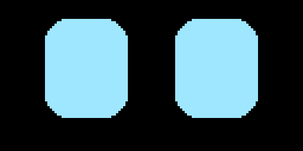
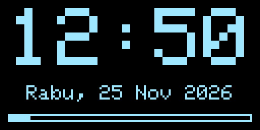
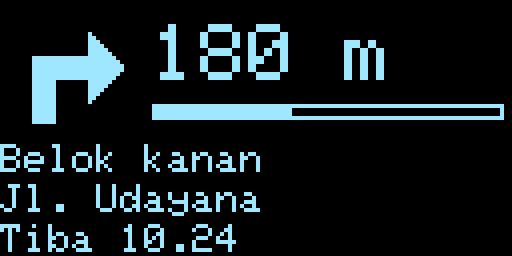
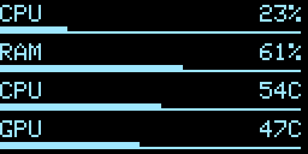

1
Isi daya & nyalakan
- Port USB-C bawah = mengisi baterai. Saat dicolok, Lokana menampilkan charging. Penuh dari kosong ±2 jam.
- Saklar di sisi kiri → geser ke ON. Lokana menyapa dengan animasi pembuka, lalu membuka mata.
- Port USB-C kanan untuk komputer (Monitor PC dan pembaruan lewat kabel).
Sekali isi penuh cukup untuk sekitar sehari pemakaian biasa (perkiraan dari pengukuran). Saat baterai lemah Lokana memberi tahu; kalau habis, Lokana tidur sendiri. Isi daya, lalu sentuh untuk membangunkan.
2
Pasang Aplikasi Lokana
Untuk HP Android. Unduh APK terbaru dari halaman rilis resmi:
Unduh Aplikasi LokanaPilih berkas lokana-app-…-arm64-v8a.apk (HP Android 64-bit, hampir semua HP sekarang). Untuk HP lama, pilih armeabi-v7a.
Muncul peringatan saat memasang? Android menanyakan izin "pasang dari sumber ini": izinkan. Google Play Protect mungkin memperingatkan karena aplikasi belum ada di Play Store: pilih Detail lainnya → Tetap instal. Kode aplikasinya terbuka di GitHub.
iPhone: aplikasi iPhone belum tersedia. Kabarnya akan diumumkan di halaman ini.
3
Sambungkan lewat Bluetooth
- Buka Aplikasi Lokana, izinkan Bluetooth dan notifikasi.
- Dekatkan Lokana yang menyala ke HP, lalu ketuk Cari Lokana dan pilih Lokana-mu.
- Lokana menampilkan kode 6 digit. Ketik kode itu di HP.
Kolom di HP mungkin bertuliskan "biasanya 0000 atau 1234". Abaikan saja dan ketik 6 digit dari layar Lokana.
Setelah tersambung, aplikasi menyambung lagi sendiri setiap kali Lokana dan HP berdekatan.
Gerakan sentuh
Lokana hanya punya satu tombol: titik sentuh di bagian atas (cekungan kecil di dekat gantungan). Sentuh dengan bantalan jari yang menempel rata, bukan ujung kuku.
| Tap | Aksi di layar yang tampil (colek Lokana, lempar dadu, halaman berikutnya, …) |
|---|---|
| 2× tap | Pindah ke layar berikutnya: wajah, jam, notifikasi, cari HP, dadu, teks, gambar |
| 3× tap | Buka menu: kecerahan, suara, layar mati, gaya jam (Klasik, Mata, Kubus, Kedip), putar layar, panduan, lupakan HP, info |
| Tahan | Matikan layar (atau ubah nilai saat di menu). Sentuh lagi untuk menyalakan |
Panduan gerakan ini juga tampil di Lokana sendiri: 3× tap → Panduan → Putar sekarang.
Yang bisa dilakukan Lokana




- Notifikasi & panggilan masuk dari aplikasi pilihanmu (atur di halaman Notifikasi).
- Navigasi Google Maps: panah belokan dan jarak; layar menyala sendiri saat mendekati belokan.
- Cari kunci (Lokana berbunyi) dan Cari HP (HP berbunyi dari Lokana).
- Pengingat ketinggalan: Lokana dan HP saling mengingatkan kalau salah satu tertinggal.
- Teks, gambar, emoji, ekspresi, dadu dari tab Studio di aplikasi.
- Monitor PC di meja: jalankan Lokana Desktop di Windows dan colok ke port kanan (panduan).
Perbarui Lokana OS
Aplikasi Lokana → Pengaturan → Pembaruan firmware → Cek pembaruan → Pasang. Prosesnya ±2 menit lewat Bluetooth; biarkan aplikasi terbuka dan Lokana dekat HP.
Aman: kalau versi baru gagal menyala, Lokana kembali sendiri ke versi sebelumnya. Semua pembaruan, beserta daftar perubahannya, ada di halaman rilis.
Kalau ada masalah
Lokana tidak ditemukan di aplikasi
- Pastikan saklar ON dan layar Lokana menyala (sentuh sekali).
- Nyalakan Bluetooth dan izin lokasi/perangkat sekitar untuk Aplikasi Lokana.
- Dekatkan Lokana ke HP, lalu ketuk Cari Lokana lagi.
Pairing gagal atau minta kode terus
- Di Lokana: 3× tap → Lupakan HP.
- Di HP: Pengaturan Bluetooth → Lokana → Lupakan.
- Sambungkan ulang dari aplikasi dan ketik 6 digit dari layar Lokana.
Notifikasi tidak muncul di Lokana
- Aplikasi Lokana → Terhubung → Notifikasi: izinkan akses notifikasi dan pilih aplikasinya.
- Atur baterai Aplikasi Lokana ke Tidak dibatasi supaya tetap berjalan di latar belakang.
Layar mati / Lokana tidak merespons
- Layar mati sendiri untuk menghemat baterai: sentuh sekali untuk menyalakan.
- Tidak bereaksi sama sekali: isi daya lewat port bawah beberapa menit, lalu geser saklar OFF lalu ON.
Masih bingung? Buka GitHub Issues atau baca dokumentasi lengkap.